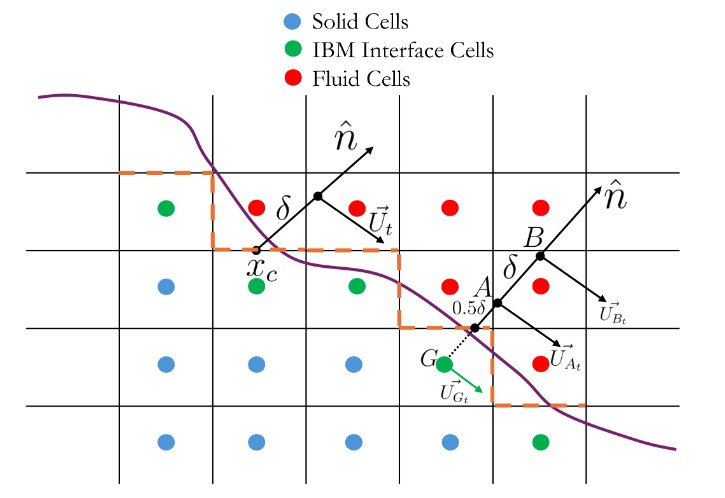

Immersed Boundary Method
TOSCA implements a ghost-cell, direct-forcing immersed boundary method (IBM) that allows complex geometries — terrain features, wind turbine towers and nacelles, and moving objects — to be represented on a structured background grid without mesh deformation. The immersed surface enters the momentum equation through a body-force term \(\mathbf{f}^{IB}\), which is applied implicitly: at each time step the velocity (and temperature) field is prescribed in IBM interface cells (ghost cells) to values consistent with the desired wall boundary condition, so the forcing is never evaluated as an explicit source term.
{kind=link}

Schematic of the ghost-cell IBM. The immersed surface (triangular mesh, black) divides the background grid into fluid cells (white), solid cells (dark), and IBM interface cells (grey). Points C and D are the two wall-normal sampling locations used during boundary-condition reconstruction when a wall model is active.
Surface Representation
The immersed-body surface is described as an unstructured triangular mesh
provided in STL (.stl) or Abaqus (.inp) format and placed in the
IBM/ directory. Multiple bodies can be defined simultaneously in
IBM/IBMProperties.dat as object0, object1, etc.
To accelerate element searches the code builds a two-level spatial data structure during initialisation:
Axis-aligned bounding box (AABB) — a tight box around each body (
findBodyBoundingBox), used to exclude bodies entirely when a query point lies far outside.Search-cell list — the bounding box is subdivided into uniform search cells whose size is proportional to the mean element edge length (
findSearchCellDim); every triangular element is inserted into all search cells it overlaps (createSearchCellList). Only elements in the relevant search cells are tested during subsequent point-in-triangle queries, reducing the search cost from \(O(N_e)\) to approximately \(O(1)\).
Cell Classification (Topology Check)
The function ibmSearch classifies every background-grid cell into one of
three categories by ray-casting: a ray is cast from each cell centre and the
number of intersections with the triangular IBM surface is counted.
Fluid cell — even number of intersections: the cell lies outside the body.
Solid cell — odd number of intersections: the cell lies inside the body.
IBM interface cell (ghost cell) — any solid cell immediately adjacent to at least one fluid cell. These cells are not advanced by the flow solver; instead their field values are overwritten each time step by the IBM boundary-condition reconstruction.
For each IBM interface cell the code identifies the closest triangular element and stores its outward unit normal \(\hat{\mathbf{n}}\) and the projection of the cell centre onto the surface (the wall point \(\mathbf{p}_\text{w}\)). The closest-element search uses a bounding-sphere acceleration: each element’s circumsphere centre \(\mathbf{q}\) and radius \(r\) are pre-computed, and the element with the smallest value of \(\|\mathbf{x} - \mathbf{q}\| - r\) is selected as the candidate before the precise face/edge/vertex projection is performed.
Boundary-Condition Reconstruction
Two reconstruction modes are available, selected via wallShearOn (and the
corresponding velocityBC) in IBMProperties.dat.
Without Wall Model
When wallShearOn = false and velocityBC is slip or noSlip,
the ghost-cell velocity is set by one-point interpolation. A single
background point B is placed a distance \(\delta\) along
\(\hat{\mathbf{n}}\) from the ghost-cell centre; \(\delta\) equals the
minimum local cell size (CurvibTrilinear) or the distance to an interception
point on an adjacent grid plane (CurvibTriangular). Denoting the
wall-normal signed distances from the IBM surface as \(s_b\) (ghost cell)
and \(s_c\) (background point B), the reconstruction gives
where \(\mathbf{u}_\text{wall}\) is the IBM-surface velocity interpolated
from the triangular mesh nodes using barycentric weights. For a slip
boundary the normal component of the ghost-cell velocity is set to zero and the
tangential component is reflected from B.
With Wall Model (Ghost-Cell Hybrid Approach)
When wallShearOn = true and velocityBC = velocityWallFunction, the
reconstruction uses two background sampling points placed at distances
\(s_c\) and \(s_d\) from the IBM wall. Setting
\(\delta = \texttt{interpDist}\):
where \(\varepsilon\) is the distance from the ghost cell centre to the projected wall point. The arrangement along the wall normal is therefore
Velocities at C (\(\mathbf{u}_C\)) and D (\(\mathbf{u}_D\)) are
obtained by trilinear interpolation from the background grid. The ghost-cell
velocity is then set by the selected wall-shear model
(CurvibInterpolationInternalCell) using all three points
\((b, c, d)\) and the IBM-surface velocity \(\mathbf{u}_\text{wall}\).
Pressure in the ghost cell is set by linear wall-normal extrapolation from C, corrected for the IBM-surface acceleration:
Wall Models
The wall boundary condition for velocity and temperature is configured per-body
in IBMProperties.dat (or matched from a domain boundary face via
velocityBCSetType = matchU*).
Velocity Wall Models
Type |
Name |
Description |
|---|---|---|
|
Cabot |
Neutral log-law with optional aerodynamic roughness |
|
Schumann |
Stability-corrected log-law. The relation
\(u_t = (u_*/\kappa)[\ln(s_c/z_0) - \psi_m(s_c/L)]\)
is used, where \(L\) is the Obukhov length and \(\psi_m\) is
the Monin–Obukhov stability function. Must be paired with the
Schumann temperature wall model ( |
|
Power-law APG |
Power-law wall profile for adverse-pressure-gradient flows. |
|
Log-law APG |
Log-law wall profile for adverse-pressure-gradient flows. |
Temperature Wall Models
Type |
Name |
Description |
|---|---|---|
|
Shumann — constant flux |
Prescribed constant wall heat flux |
|
Shumann — heating rate |
Prescribed constant surface heating rate. Not yet implemented for IBM. |
|
Shumann — time history |
Surface potential temperature and Obukhov length read from a
time-series file ( |
In addition to thetaWallFunction, the temperature boundary condition at an
IBM surface can be set to zeroGradient (ghost-cell temperature equals the
value at C) or fixedValue (ghost-cell temperature equals the prescribed
fixedValueT).
Interpolation Schemes
The interpolation model is selected via IBInterpolationModel in
IBMProperties.dat. The available options and their governing functions are
listed below.
|
|
|
Function / Notes |
|---|---|---|---|
|
|
|
|
|
|
|
|
|
|
— |
|
|
— |
— |
|
|
— |
— |
|
Note
The wallShearOn flag requires IBInterpolationModel = CURVIB and
a velocityBC = velocityWallFunction entry; it overrides the
curvibType / curvibOrder settings and always uses
CurvibInterpolationInternalCell.
Dynamic IBM
Setting dynamic = true in IBMProperties.dat enables a moving immersed
body. At every time step UpdateIBM rebuilds the full cell-classification
data structures:
Previous lists are destroyed (
destroyLists).The mesh is advanced by
UpdateIBMesh(see motion types below).The bounding box, search-cell list, outward normals, ray-casting classification, IBM fluid-cell list, and closest-element search are all recomputed from scratch.
This per-step re-initialisation supports arbitrarily large motions with no restriction on the displacement per time step.
The mesh motion is performed by UpdateIBMesh, which dispatches to the
following bodyMotion types:
|
Description |
|---|---|
|
No motion; lists are built once at initialisation and not rebuilt. |
|
Rigid rotation about |
|
Sinusoidal translation along |
|
Sinusoidal pitching rotation about |
Force and Moment Integration
When computeForce = true, the aerodynamic load on each IBM object is
evaluated every timeInterval (or physical-time interval, depending on
intervalType) by ComputeForceMoment. For each triangular element of
the IBM surface mesh the procedure is:
A pressure-interpolation point is placed at a distance \(\ell = \sqrt{2\,A_e}\) (where \(A_e\) is the element area) outward from the element centre along \(\hat{\mathbf{n}}\). If that point lies inside solid cells it is shifted outward in increments of \(0.2\,\ell\) until a valid trilinear interpolation stencil is found.
The static pressure \(p\) and velocity \(\mathbf{u}\) are trilinearly interpolated at the interpolation point.
The pressure force on the element is
\[\mathbf{F}_P^{(e)} = -\rho\!\left(p - \frac{\partial u_{\text{wall},n}} {\partial t}\,\ell\right)A_e\,\hat{\mathbf{n}},\]where \(u_{\text{wall},n} = \partial\mathbf{u}_\text{wall}/\partial t \cdot\hat{\mathbf{n}}\) is the IBM-surface normal acceleration, which provides a correction for the unsteady pressure gradient next to a moving wall.
The viscous shear force is computed from the friction velocity \(u_* = u_\tau(\mathbf{u}_B - \mathbf{u}_\text{wall})\) using the Cabot model and applied in the direction of the relative tangential velocity.
Net pressure force, viscous force, aerodynamic torque, and shaft power (for
rotation bodies) are reduced across all MPI ranks and appended to
postProcessing/<meshName>/IBM/<startTime>/<bodyName>/netForce/<bodyName>_netForce
Per-element pressure loads (in Abaqus .dlo format) are written to the
elementForce/ subfolder when writePForce = true in the io sub-dict.